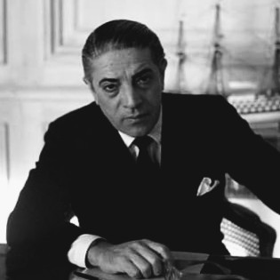

Aristotle Socrates Onassis(20 January 1906-15 March 1975), commonly called Ari or Aristo Onassis was a Greek-Argentine shipping magnate, who amassed the world's largest privately owned shipping fleet and was one of the world's richest and most famous men.

The most well-known potrait of Onassis
The following list is a time line of Onassis Life
- 1906-born in Karatas, Smyrna, Ottoman Empire.
- 1922-He left Smyrna during the great fire of Smyrna in 1922.
- 1932-He went to Buenos Aires, Argentina and start working as a telephone operator.
- 1939-He relocated to New York and started his shipping businesses.
- 1946-Onassis married Athina Livanos, daughter of shipping magnate Stavros G. Livanos and Arietta Zafrikakis, on 28 December 1946. The couple had become largely separated by the mid-1950s.
- 1950-1956-Onassis had success whaling off the Peruvian coast.
- 1953-In Monaco he started to purchase the shares of Monaco's SMB using the tax haven of Panama and finally took the control of SBM.
- 1954-Cancellation of the agreement between the Saudi government and Aristotle Onassis to transport Saudi oil on his tankers and
in any case, to make the agreement ineffective.
- 1956-Aristotle Onassis signed a contract granting him the operational rights to the Greek air transport industry. Olympic Airways was founded.
- 1957-Onassis and opera prima donna Maria Callas embarked on an affair despite the fact that they were both married.